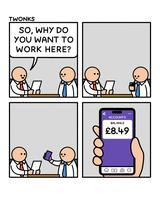

Just six days ago — and 30 minutes after a Disney-OpenAI meeting about a project with Sora — Disney's team was "blindsided" with the news Sora was being discontinued, a person familiar with the matter told Reuters, describing OpenAI's move as "a big rug-pull."
Even some Sora employees were surprised by the cancellation. It was just 14 weeks ago Disney announced a $1 billion investment in OpenAI's AI-powered video generation tool — plus a three-year licensing deal. But that deal "never closed," Reuters adds, citing two other people familiar with the matter, "and no money changed hands." (Although the two sides are still "discussing if there is another way they can partner or invest with one another, one of the people familiar with the matter said.")
But Variety wonders if the end of the Sora deal is "a blessing in disguise" for Disney:
Before Disney's officially sanctioned AI-generated versions of Mickey Mouse, Darth Vader, Baby Yoda, Deadpool and more debuted in OpenAI's Sora, the AI company abruptly pulled the plug on the video app...
[M]any aficionados of Disney's franchises were not, in fact, excited about what Sora's video generator might do to the likes of the Avengers superheroes or the characters from Frozen or Moana. And despite [departed Disney CEO Bob] Iger's bullishness on the Sora deal, other Disney execs were said to be concerned that going into business with OpenAI would expose the Magic Kingdom's crown jewels to the risk of being turned into so much AI slop, according to industry sources. Hollywood unions — for which AI adoption has been a hot-button issue — weren't thrilled about the Disney-Sora deal either. "Disney's announcement with OpenAI appears to sanction its theft of our work and cedes the value of what we create to a tech company that has built its business off our backs," the Writers Guild of America said in December... [S]ources say, Disney was encountering roadblocks in getting the OK from voice actors for the Sora pact...
At least publicly, Disney says it is still looking at ways it can tap into the AI ecosystem. The company, in a statement Tuesday, said, "we will continue to engage with AI platforms to find new ways to meet fans where they are while responsibly embracing new technologies that respect IP and the rights of creators." But at this point, Disney may decide that "meeting fans where they are" means keeping its beloved and world-famous characters away from the AI machinery.
Or, as Gizmodo puts it, "Disney Says It Will Find Ways to Peddle Slop Elsewhere After Pulling Out of OpenAI Deal."
But Deadline sees the deal's collapses as a lost opportunity:
The OpenAI partnership was a template on which to build, potentially allowing for other deals that end the exploitation of human creativity by unscrupulous AI models. It was also the kind of partnership that was palatable for the Human Artistry Campaign and Creators Coalition on AI, lobby groups that have been critical of tech business models and command support from A-listers including Scarlett Johansson, Cate Blanchett and Joseph Gordon-Levitt.
Dr. Moiya McTier, an advisor to the Human Artistry Campaign, puts it this way: Part of the problem is getting "artsy people and the techie people to talk." OpenAI sinking Sora will not make these discussions easier. It's a move that starkly exposes Hollywood's vulnerability to the capriciousness of big tech.
Read more of this story at Slashdot.
"IBM says its quantum computer can now simulate real magnetic materials and match actual lab experiment results," writes Slashdot reader BrianFagioli, "which is something people have been waiting years to see."
Instead of just theoretical output, the system reproduced neutron scattering data from a known material, meaning it lines up with real world physics. It still relies on a mix of quantum and classical computing and this is a narrow use case for now, but it is one of the first times quantum hardware has produced results that scientists can directly validate against experiments, which makes it a lot more interesting than the usual hype.
Classical computers "are not great at modeling quantum systems," according to this article at Nerds.xyz. "The math gets messy fast, and scientists end up relying on approximations... Quantum computers are supposed to solve that problem..."
If this direction continues, it could start to matter in areas like superconductors, battery tech, and even drug development. Those are the kinds of problems where better simulations can actually lead to better outcomes, not just nicer charts in a research paper.
"I am extremely excited about what this means for science," said study co-author Allen Scheie from the Los Alamos National Laboratory. In an announcement from IBM, Scheie calls this "the most impressive match I've seen between experimental data and qubit simulation, and it definitely raises the bar for what can be expected from quantum computers."
Read more of this story at Slashdot.
Memory and storage shortages and price hikes have "steadily rippled outward across all kinds of consumer tech," reports Ars Technica.
"Today's bad news comes from Sony, which is raising prices for PlayStation 5 consoles in the US just eight months after their last price hike."
The drive-less Digital Edition will increase from $500 to $600; the base PS5 with an optical drive will increase from $550 to $650; and the PS5 Pro is going up from $750 to a whopping $900. At the beginning of 2025, these consoles cost $450, $500, and $700, respectively...
RAM and flash memory chips are in short supply primarily because of demand from AI data centers — memory manufacturers have shifted more production toward making the kind of memory found in AI accelerators like Nvidia's H200, leaving less for the consumer market. And the situation is unlikely to improve any time soon, barring a major shift in demand from the AI industry.
Read more of this story at Slashdot.
In a new 4,000-word article, CNN tells the story of a retired appellate paralegal and grandmother in her early 70s who was treated for depression with psilocybin. CNN notes there's now retreats featuring psilocybin in a few countries — and while psilocybin is illegal under United States federal law, "In Oregon, 5,935 clients received psilocybin services through Oregon's state-regulated program in 2025."
High doses of psilocybin are effective in treating depression, a growing body of research suggests, with promise for other conditions, like PTSD and addiction, said Dr. Albert Garcia-Romeu, associate director of the Center for Psychedelic and Consciousness Research at Johns Hopkins University... Some researchers suggest it disrupts entrenched traffic patterns in the brain or grows new neuron connections to change thinking. Others say the results from psilocybin could have to do with its anti-inflammatory effect, Garcia-Romeu said...
Colorado became the second state to make psilocybin legal with a 2023 law and issued its first healing center" last year. A law adopted in New Mexico last year established that state's Medical Psilocybin Program, now in development... Psilocybin seems to be "knocking on the door of FDA approval," said Dr. Lynn Marie Morski, president of the Psychedelic Medicine Association, which educates health care providers on the therapeutic use of psychedelics so they can answer patients' questions through the lenses of clinical evidence and harm reduction. Psilocybin therapy first received a "breakthrough therapy" designation for treatment-resistant depression from the US Food and Drug Administration in 2018, and now psilocybin drug products are on track to be submitted to the FDA for possible approval in the not-too-distant future.
While psilocybin is illegal under United States federal law, more states are creating their own paths for legal use under state laws.
Read more of this story at Slashdot.
UK startup Pulsar Fusion says it has achieved the first plasma ignition inside a nuclear fusion rocket engine prototype -- a huge step for space travel that could cut missions to Mars "from months-long journeys to just a few weeks," reports Euronews. From the report: Pulsar Fusion revealed the milestone during a live stream at Amazon's MARS Conference, hosted by Jeff Bezos in California this week, with CEO Richard Dinan calling it an "exceptional moment" for the company. The team successfully created plasma - an intensely hot, electrically charged state of matter, often described as the fourth state of matter - using electric and magnetic fields inside its experimental and early prototype "Sunbird fusion exhaust system." [...] The company now plans further testing of its Sunbird system to improve performance. Upcoming upgrades include more powerful superconducting magnets designed to better contain and control plasma.
Read more of this story at Slashdot.
Bell Labs "created many of the foundational innovations of the modern age," writes Jon Gertner, author of The Idea Factory: Bell Labs and the Great Age of American Innovation — from transistors and telecommunications satellites to Unix and the C programming language.
But what was the secret to its success? he asks in a new article for the Wall Street Journal. Start with its lucky arrival in a "problem-rich" environment, suggests Arno Penzia, winner of one of Bell Labs' 11 Nobel Prizes:
It was Bell Labs' responsibility, in other words, to create technologies for designing, expanding and improving an unruly communications network of cables and microwave links and glass fibers. The Labs also had to figure out ways to create underwater conduits, as well as switching centers that could manage the growing number of customers and escalating amounts of data.... Money mattered, too. Being connected to AT&T, the largest company in the world, was an advantage. The Labs' budget was enormous, and accounting conventions allowed its parent company to make huge and continuing investments in R & D. The generous funding, moreover, allowed scientists and engineers to buy and build expensive equipment — for instance, anechoic chambers to create the world's quietest rooms...
The most fortunate part of Bell Labs' situation, however, was that in being attached to a monopoly it could partake in long-term thinking... Without competition nipping at its heels, Bell Labs engineers had the luxury of working out difficult ideas over decades. The first conceptualization of a cellular phone network, for instance, came out of the Labs in the late 1940s; it wasn't until the late 1970s that technicians began testing one in Chicago to gauge its potential. The challenge of deploying these technologies was immense. (The regulatory hurdles were formidable, too....)
The article also credits the visionary management of Mervin Kelly — who fortunately also "had access to funding in a decade when most executives and universities didn't" to hire the brightest people. (By the early 1980s Bell Labs employed about 25,000 researchers, technicians and support staff, with an annual budget of $2 billion — roughly $7 billion in today's dollars.) "The Labs' involvement in World War II suggested to Kelly that an exciting postwar era of electronics was approaching, but that the technical problems would be so complex that they required a mix of expertise — not just physicists, but material scientists, chemists, electrical engineers, circuitry experts and the like."
At Bell Labs, Kelly would sometimes handpick teams and create such a mix, as was the case for the transistor invention in the late 1940s. He came to see innovation arising not from like-minded or similarly trained people conversing with each other, but from a friction of ideas and approaches. It meant hiring researchers who had different personalities and favored a range of experimental angles. It also meant personally designing a campus in Murray Hill where departments were spread apart, so that scientists and engineers would be forced to walk, mingle and engage in serendipitous conversations and debate ideas. Meanwhile, under Kelly, the Labs focused on hiring people who were deeply curious, not just smart. Kelly saw it as his professional duty to do far more than what was expected, with his laboratory and vast resources, to create new technologies...
The breakup of AT&T's monopoly, which led to a steady shrinking of Bell Labs' staff, budget and remit, shows us that no matter how forward looking your employees and managers may be, they will not necessarily see the future coming. It likewise suggests that technological progress is too unpredictable for one organization, no matter how powerful or smart, to control. Famously, Bell Labs managers didn't see value in the Arpanet, which eventually led to today's internet.
And yet, for at least five decades, Bell Labs created a blueprint for the global development of communications and electronics. In understanding why it did so, I tend to think its ultimate secret may be hiding in plain sight. The secret has to do with Bell Labs' structure — not only being connected to a fabulously profitable monopoly, but being connected to a company that could move theoretical and applied research into a huge manufacturing division that made telecom equipment (at Western Electric) and ultimately into a dynamic operating system (the AT&T network)... Scientists and engineers at the Labs understood their ideas would be implemented, if they passed muster, into the huge system its parent company was running.
Bell Labs racked up about 30,000 patents, according to the article, and celebrated its 100th anniversary last April.
It is now part of Finland-based Nokia.
Read more of this story at Slashdot.
"Emergency out-of-band fixes issued by enterprise IT giants Microsoft and Oracle have shone a spotlight on issues around both update cycles and patching," reports Computer Weekly:
Microsoft's emergency update, KB5085516, addresses an issue that arose after installing the mandatory cumulative updates pushed live on Patch Tuesday earlier this month. According to Microsoft, it has since emerged that many users experienced problems signing into applications with a Microsoft account, seeing a "no internet" error message even though the device had a working connection. This had the effect of preventing access to multiple services and applications. It should be noted that organisations using Entra ID did not experience the issue.
But Microsoft's emergency patch comes just days after it doubled down on a commitment to software quality, reliability and stability. In a blog post published just 24 hours prior to the latest update, Pavan Davuluri of Microsoft's Windows Insider Program Team said updates should be "predictable and easy to plan around".
Michael Bell, founder/CEO of Suzu Labs tells Computer Weekly that Microsoft's patch for the sign-in bug follows "separate hotpatches for RRAS remote code execution flaws and a Bluetooth visibility bug. Three emergency fixes in eight days does not shout reliability era."
Oracle's patch, meanwhile, addresses CVE-2026-21992, a remote code execution flaw in the REST:WebServices component of Oracle Identity Manager and the Web Services Security component of Oracle Web Services Manager in Oracle Fusion Middleware. It carries a CVSS score of 9.8 and can be exploited by an unauthenticated attacker with network access over HTTP.
Read more of this story at Slashdot.
An anonymous Slashdot reader writes: ClickFix attacks are ramping up. These attacks have users copy and paste a string to something that can execute a command line — like the Windows Run dialog, or a shell prompt.
But MacRumors reports that macOS 26.4 Tahoe (updated earlier this week) introduces a new feature to its Terminal app where it will detect ClickFix attempts and stop them by prompting the user if they really wanted to run those commands.
According to MacRumors, the warning readers "Possible malware, Paste blocked."
"Your Mac has not been harmed. Scammers often encourage pasting text into Terminal to try and harm your Mac or compromise your privacy...."
There is also a "Paste Anyway" option if users still wish to proceed.
Read more of this story at Slashdot.
Linux kernel maintainer Greg Kroah-Hartman tells The Register that AI-driven code review has "really jumped" for Linux. "There must have been some inflection point somewhere with the tools..."
"Something happened a month ago, and the world switched. Now we have real reports." It's not just Linux, he continued. "All open source projects have real reports that are made with AI, but they're good, and they're real." Security teams across major open source projects talk informally and frequently, he noted, and everyone is seeing the same shift. "All open source security teams are hitting this right now...."
For now, AI is showing up more as a reviewer and assistant than as a full author of Linux kernel code, but that line is starting to blur. Kroah-Hartman has already done his own experiments with AI-generated patches. "I did a really stupid prompt," he recounted. "I said, 'Give me this,' and it spit out 60: 'Here's 60 problems I found, and here's the fixes for them.' About one-third were wrong, but they still pointed out a relatively real problem, and two-thirds of the patches were right." Mind you, those working patches still needed human cleanup, better changelogs, and integration work, but they were far from useless. "The tools are good," he said. "We can't ignore this stuff. It's coming up, and it's getting better...." [H]e said that for "simple little error conditions, properly detecting error conditions," AI could already generate dozens of usable patches today.
The sudden increase in AI-generated reports and AI-assisted work has also spurred a parallel push to build AI into the kernel's own review infrastructure. A key piece of that is Sashiko, a tool originally developed at Google and now donated to the Linux Foundation.
Kroah-Hartman said some patches are being generated with AI now. "You have a little co-develop tag for that now. We're seeing some things for some new features, but we're seeing AI mostly being used in the review."
Read more of this story at Slashdot.
After decades of studying, this week NASA announced "a major step forward in bringing nuclear power and propulsion from the lab to space."
NASA will launch the Space Reactor-1 Freedom, the first nuclear powered interplanetary spacecraft, to Mars before the end of 2028, demonstrating advanced nuclear electric propulsion in deep space. Nuclear electric propulsion provides an extraordinary capability for efficient mass transport in deep space and enables high power missions beyond Jupiter where solar arrays are not effective.
Steven Sinacore, NASA's program executive for Fission Surface Power who will also oversee the SR-1 Freedom mission, emphasized to CNN that "On the ground the reactor is off. There's no radiation coming from it. It doesn't actually turn on until you're up in space, and that's where the radiation comes from." NASA says they aim to develop the capabilities required "for sustained exploration beyond the Moon and eventual journeys to Mars and the outer solar system."
And Space Reactor-1 Freedom will carry a fleet of tiny helicopters (much like Ingenuity) to explore Mars, reports Space.com:
Whereas Ingenuity was a technology demonstrator, however, the Skyfall fleet will have concrete tasks. Chief among them is scout: If all goes to plan, the little choppers will help NASA assess the potential of their target area (wherever that happens to be) to support human exploration. The Skyfall helicopters will carry cameras and ground-penetrating radar to scout a future landing site, to understand the slopes and hazards for human-scale landers," Steve Sinacore, the program executive for NASA's Space Reactors Office, said during the briefing. "They will also map and characterize the subsurface water ice to find out where the water ice deposits are, along with the size, depth and other important characteristics," he added...
And that might not be the end of the line for SR-1 Freedom; NASA may decide to keep flying the spacecraft out into the solar system after it deploys the Skyfall choppers, according to Sinacore. The mission architecture, like much of NASA's exploration portfolio, is not yet finalized.
Read more of this story at Slashdot.
The Wall Street Journal reports:
Walking into his kitchen, Tim Yoder recoiled at a message on his refrigerator door: "Shop Samsung water filters." Yoder, a supply-chain manager in Chicago, owns a Samsung Electronics Family Hub fridge. He paid $1,400 for an appliance that came with a 32-inch screen on the door that allows him to control other Samsung gadgets, pull up recipes or stream music. But since last fall, it's been intermittently serving up ads, part of a pilot program being tested on some of Samsung's smart fridges sold in the U.S. The response? Not warm. "I guess this is another place for somebody to shove an ad in your face," said the 47-year-old Yoder, recalling the first time he noticed one...
The ads are only on certain Family Hub fridges that have screens and internet connectivity. They run as a rectangular banner at the bottom — part of a widget that also shows news, the weather and a calendar. Samsung declined to say how long the pilot might last or whether it would end. The firm recently unveiled a "Screens Everywhere" initiative that also includes washers, dryers and ovens.... Samsung launched the banner-type fridge ads that come as part of the widget via an October software update. In a footnote of a news release at the time, Samsung pledged to "serve contextual or non-personal ads" and respect data privacy. The banner ads can be turned off in settings.
Samsung said the purpose of the pilot is to explore whether ads relevant to home chores can be useful to owners, and that overall pushback has been negligible. The "turn-off" rate for the pilot ad program remains in the bottom single-digit range, it said... While owners can turn off the banner ads, doing so eliminates the widget altogether, a bummer for Brian Bosworth, a media-industry engineer who liked the feature. Bosworth thinks it's wrong to take away the new feature as a condition. Wanting to keep the widget but not the ads, the 49-year-old in Edgewater, Md., made sure his home router's ad-blocking software extended to his fridge. He hasn't seen another since.
One 27-year-old plans to return his refrigerator after the entire display "lit up with a full-screen ad for Apple TV's sci-fi show Pluribus," according to the article. The all-caps ad beckoned him "with an oft-used refrain directed at protagonist Carol Sturka: 'We're Sorry We Upset You, Carol.'"
Thanks to Slashdot reader fjo3 for sharing the article.
Read more of this story at Slashdot.
Long-time Slashdot reader Qbertino writes: ... but the CERN Project "Antimatter in motion" just did it. For the first time in history researchers at CERN have transported 92 antiprotons on a truck in a specially designed magnetic enclosure. The test-drive went so well that the researchers spontaneously decided to go another round... The purpose of the experiment was to test the feasibility of transporting antimatter to other facilities in Europe to conduct further antimatter research. German news Tagesschau has a nice report.
CNN reports that the antiproton enclosure was nearly six feet tall and weighed about 1,760 pounds. And Smithsonian magazine explains that it trapped the antiprotons in a vacuum chamber that had to be cooled to around -450 degrees Fahrenheit:
Experts used a crane to carefully move the box of precious cargo from a lab onto a truck, which took about three hours, per the Associated Press' Jamey Keaten. Then, they drove the vehicle for roughly 30 minutes around CERN's campus, and subsequently returned the antiprotons to the lab. They worked with so little antimatter that even if it did touch ordinary matter and annihilate, it would release a small amount of energy detectable only by a special instrument, reports the AP.
Read more of this story at Slashdot.
An anonymous reader quotes a report from Reuters: OpenAI's ChatGPT ads pilot in the United States has crossed the $100 million annualized revenue mark within six weeks of launch, a company spokesperson said on Thursday, pointing to robust early demand for the AI startup's nascent advertising business. [...] While roughly 85% of users are currently eligible to see ads, fewer than 20% are shown ads daily, with considerable room to grow ad monetization within the existing user pool, the spokesperson said.
"We're seeing no impact on consumer trust metrics, low dismissal rates of ads, and ongoing improvements in the relevance of ads as we learn from feedback," OpenAI said. The company plans to expand the test globally in additional countries in the coming weeks, including in Australia, New Zealand, and Canada. OpenAI has now expanded to over 600 advertisers, with nearly 80% of small- and medium-sized businesses signaling interest in ChatGPT ads, the spokesperson said. The ChatGPT maker is set to launch self-serve advertiser capabilities in April to broaden access and drive further growth. CEO Sam Altman announced plans to begin testing ads on ChatGPT back in January after previously rejecting the idea. "I kind of think of ads as like a last resort for us as a business model," Altman said in 2024.
Further reading: OpenAI CFO Says Annualized Revenue Crosses $20 Billion In 2025
Read more of this story at Slashdot.
It's FOSS interviewed a software engineer whose long-running open source contributions include Python code for the Arch Linux installer and maintaining packages for NixOS. But "a recent change he made to systemd has pushed him into the spotlight" after he'd added the optional birthDate field for systemd's user database:
Critics saw it not merely as a technical addition, but as a symbolic capitulation to government overreach. A crack in the philosophical foundation of freedom that Linux is built on. What followed went far beyond civil disagreement. Dylan revealed that he faced harassment, doxxing, death threats, and a flood of hate mail. He was forced to disable issues and pull request tabs across his GitHub repositories...
Q: Should FOSS projects adapt to laws they fundamentally disagree with? Because these kinds of laws are certainly in conflict with what a lot of Linux users believe in.
A. Unfortunately, in a lot of cases, the answer is yes — at least for any distribution with corporate backing. The small independent distributions are much more flexible to refuse as a protest.
If we ignore regulations entirely, we risk Linux being something that companies are not willing to contribute to, and Linux may be shipped on less hardware. I'm talking about things like Valve and System76 (despite them very vocally hating these laws). That does not help us; it just lowers the quality of software contributions due to less investment in the platform and makes Linux less accessible to the average person. We need Linux and other free operating systems to remain a viable alternative to closed systems.
Q. Do you think regulations like these will reshape desktop Linux in the next 5-10 years where we might have "compliant Linux" and "Freedom-first Linux"?
A. Unfortunately, yes, to some degree this is likely. I imagine the split will be mostly along the lines of independent distributions and those with corporate backing.
We're already seeing it as far as which distributions plan on implementing some sort of age verification and which ones are not, and that sucks. I'd rather nobody have to deal with this mess at all, but this is the reality of things now. As I said in the previous response, the corporate-backed distributions really have no choice in the matter. Companies are notoriously risk-adverse, but something like Artix or Devuan? Those are small and independent enough where the individual maintainers may be willing to take on more risk.
I was actually thinking about what this would look like if we added it to [Linux system installer] Calamares and chatting about that with the maintainers before that thread got brigaded by bad actors posting personal information and throwing around insults. I completely support the freedom for the distro maintainers to choose their risk tolerance. If the distribution is based out of Ireland or something (like Linux Mint) without these silly laws in the jurisdiction the developer operates in, I think that we should leave it up to them to make a choice here.
They think the installer should have a date picker with a flag to disable it, and "We can even default it to off, and corporate distributions using Calamares or those not willing to take the risk could flip it on if they need to. That way if maintainers of the distributions do not wish to collect the birth date, they won't have to, and no forking is required to patch it out."
Read more of this story at Slashdot.
A dog missing for two months was found at an animal shelter — and its owner received an email from an artificial intelligence service that identified it, according to the Washington Post.
"As controversial as AI is right now, this is one of those areas where it's a real win," according to the chief executive at the nonprofit animal welfare organization Best Friends Animal Society. And while it shouldn't replace microchipping pets, AI does offer another tool to help desperate pet owners (and overcrowded animal shelters) — and might even be "game-changing"...
People send photos of their lost pets to a database, and AI compares the pets' features — including facial structure, coat pattern and ear shape — to photos of stray pets that have been spotted elsewhere. Many of the stray pets have already been taken to shelters... Doorbell cameras have recently implemented facial recognition for dogs, and perhaps the largest AI database for pet reunification is Petco Love Lost, which says it has reunited more than 200,000 pets and owners since 2021... After owners upload photos of their lost pets, AI scans thousands of photos of lost animals from social media and from about 3,000 animal shelters and rescues that use the software, according to Petco Love, an animal welfare nonprofit that's affiliated with the pet store Petco. It notifies owners if two photos match.
The article notes that one in three pets go missing during their lifetime, according to figures from the Animal Humane Society. "But as technology has progressed, so have resources for finding lost pets" — including GPS collars — and now, apparently, AI-powered pet identification.
Read more of this story at Slashdot.
Isabelle Bousquette / Wall Street Journal : An AI-generated TikTok parody of reality series Love Island, called Fruit Love Island, averaged 10M+ views across its first 21 episodes after debuting last week — ‘Fruit Love Island’ averages over 10 million views for each of its episodes — A new viral dating show featuring sexy …
Lulu Garcia-Navarro / New York Times : Q&A with YouTube CEO Neal Mohan on the platform's dominance, its impact on kids, the suspension and reinstatement of Trump's YouTube account, AI slop, and more — YouTube is now the leading way Americans watch video. Its audience is young; an astonishing 90 percent of American teenagers are on the platform.
John Burn-Murdoch / Financial Times : Analysis: while social media rewards sensationalism and inflammatory content, LLMs guide people away from extreme positions and towards expert-aligned stances — Large language models elevate expert consensus and moderate views, in sharp contrast to social platforms © FT montage/Getty Images …
Stanford University : A study of 11 leading LLMs finds the models more agreeable than humans when giving interpersonal advice, affirming users' behavior even when harmful or illegal — What does it mean to be reasonable? — PreferencesShow me... Faculty/Staff Student — Along with Stanford news and stories, show me:
Financial Times : Vinod Khosla says AI is accelerating a shift of wealth and power away from workers, and an income tax overhaul in the US could offset voter fears about job loss — Vinod Khosla says voter fears over technology causing job losses will shape upcoming US elections
Heather Landi / Fierce Healthcare : Qualified Health, which helps health systems evaluate and adopt AI tools, raised a $125M Series B led by NEA at a valuation of between $500M and $1B — Qualified Health Artificial Intelligence New Enterprise Associates SignalFire — Qualified Health, a startup that works with health systems …
Logan Bartlett / @loganbartlett : A look at why Dotcom Bubble comparisons to the AI boom are off, vertical SaaS is up +3% last 12 months vs. horizontal SaaS down 35%, and other reflections on AI — This week I co-wrote Redpoint's 2026 Market Update for our Limited Partners with my colleagues @AdilBhatia and @lydianday.
Wall Street Journal : A profile of Mark Lanier, a TX lawyer and part-time pastor who beat Meta and Google in the LA social media case and said Zuckerberg was “rattled” on the stand — Plaintiff's attorney Mark Lanier uses props and parables to challenge social-media giants, drugmakers and manufacturers …
Julie Bort / TechCrunch : Report analyzing payments of 28M US consumers shows Claude adding paid subs at a steadily increasing pace; Anthropic: paid subs have more than doubled this year — Whatever the final outcome for Anthropic from its feud with the Department of Defense, the attention it has generated …
Pierluigi Paganini / Security Affairs : ShinyHunters says it stole 350GB+ of data in a cyberattack on the European Commission, detected on March 24; the EC says its internal systems were not affected — The European Commission has allegedly been breached by ShinyHunters, with reported data dumps including content from mail servers.
John Sakellariadis / Politico : Sources: DHS clears seven CISA staffers of wrongdoing; the staffers had been accused of misleading CISA's former acting director into taking a polygraph test — Former DHS spokesperson Tricia McLaughlin previously told POLITICO the staffers were under investigation for “misleading” …
Grace Kay / Business Insider : Sources: Ross Nordeen, the last remaining cofounder at xAI, left the company on Friday; Nordeen reported directly to Elon Musk as his right-hand operator — Follow Grace Kay … - Elon Musk started xAI with 11 cofounders in 2023. — The last remaining one, Ross Nordeen, has now exited the company.
Keach Hagey / Wall Street Journal : A look at the decadelong feud between Sam Altman and Dario Amodei; sources say Amodei likened Altman's legal fight with Musk to Hitler's fight with Stalin — Personal wounds and power struggles between the leaders of OpenAI and Anthropic are defining how the world encounters the technology
Kevin Lincoln / Bloomberg : Chess grandmasters find new ways to win by making less optimal moves after AI pushed classical chess toward perfect play, breathing new life into the game — Artificial intelligence drove chess toward perfect play, leading to more draws at top tournaments. Now grandmasters are winning by making less optimal moves.
Newcomer : A look at some themes at this year's Hill and Valley Forum: embracing government-led industrial policy to onshore manufacturing, AI's unpopularity, and more — Plus, Kleiner's big fundraise & a reckoning for social media … The Main Item — Industrial Policy Gets New Life as Tech Eyes Government Incentives